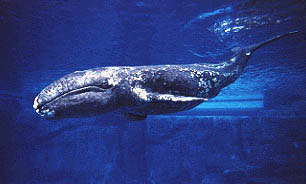

Walvis

De walvisachtigen of walvissen (Cetacea) zijn een groep van circa 82 soorten grote, in het water levende zoogdieren. De orde bevat twee onderordes: De baleinwalvissen (Mysticeti) en de tandwalvissen (Odontoceti). Walvissen zijn van alle zoogdieren het meest verregaand aan het leven in het water aangepast."Cetus" is Latijn en wordt in de biologische namen gebruikt om te verwijzen naar walvis. De oorspronkelijke betekenis ervan is groot zeedier. Het komt van het Oudgriekse κῆτος (kētos), dat "grote vis" of "zeemonster" betekent. In de Griekse mythologie werd het monster dat door Perseus werd verslagen, Ceto genoemd. Het monster wordt afgebeeld door het sterrenbeeld Cetus. Cetologie is de tak van de mariene wetenschappen verbonden aan de studie van de walvisachtigen.
Bron: Wikipedia